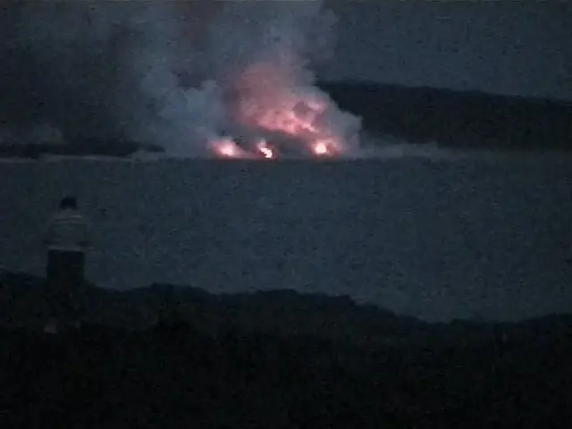
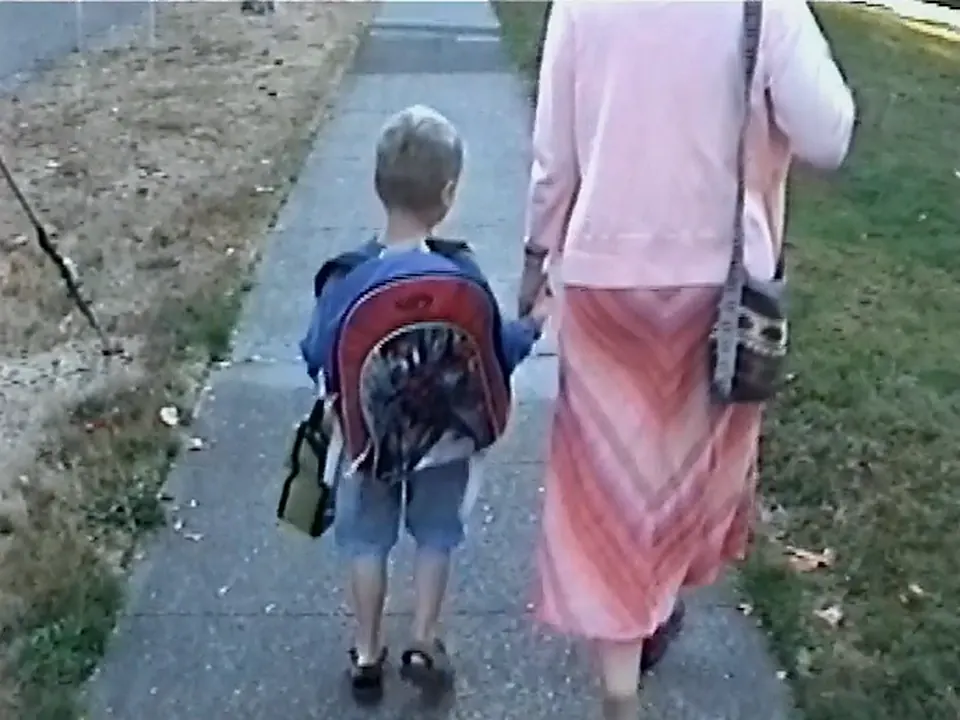
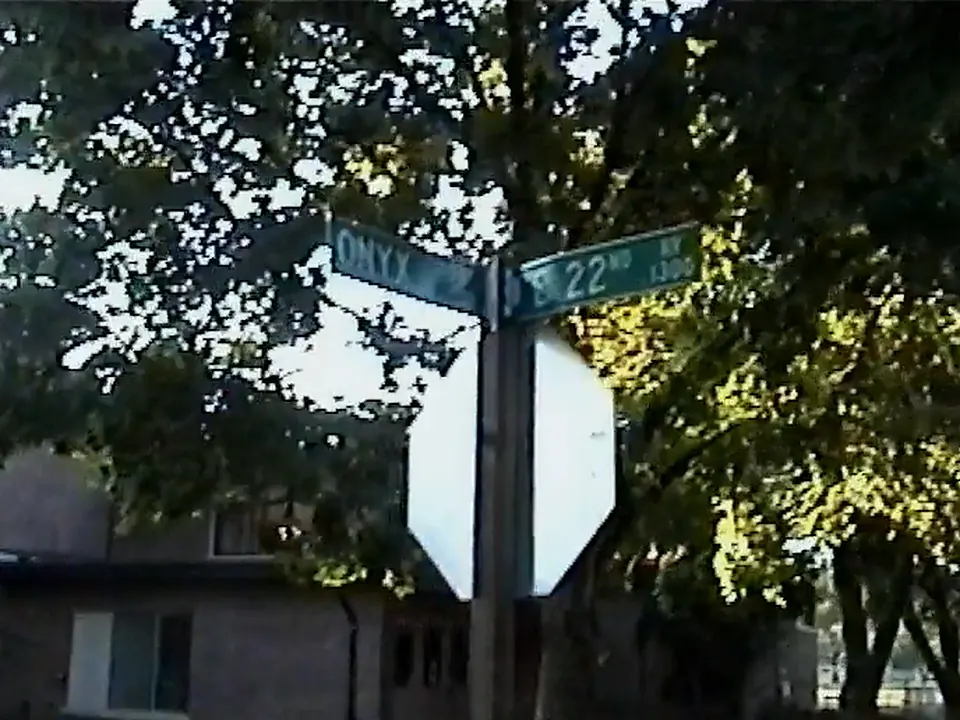

A personal project
My little VHS digitization project that turned into a family archive
Thirty-one hours of my family's home videos, and no idea where to start. So I built something to watch them for me.
a box of VHS tapes
- 31.4 hours
- No labels
- No dates
I'm Phillip, the kid in most of these clips. My family's nineteen camcorder tapes cover 1997 to 2007: Madison, then Eugene, and trips to Hawaiʻi, Alaska, Davos and Moscow. Much of it is narrated in Russian, some of it straight to my grandparents in Moscow. On my first day of school, my dad asks me, in Russian, if I'm a little scared. I tell him no.
For a decade those tapes sat in the attic. Last year I started a project to digitize all of them, and what came back was 36 clips: thirty-one hours of footage with no labels and no dates. I didn't want to sit through all of it, and I didn't know where to start.
So I started writing a script to split each tape into scenes. It kept growing. It learned to read the date a camcorder burns into the corner of the picture, to tell voices apart, to follow faces, to work out who's family, to put signs on a map and to keep Russian and English straight. By the end it was less a splitter than an archivist: something I can ask what's on any tape, when it happened, where we were and who was talking.
I called it tapesplit. Here's what it does with a box of tapes.
What one tape looks like now
Here's Tape 16. It came back from the digitizer as tape-18.mp4: two hours and four minutes, no label. tapesplit found 43 moments on it, from a trip to Hawaiʻi, a weekend on the Oregon coast and a spring at home, and skipped the blank tape in between.
Move across the filmstrip to skim the tape. Click any moment to see everything it found.

Move across the filmstrip to skim the tape. Click any moment for everything tapesplit found.
How it figures things out
The short version: it watches every tape four times. First on my Mac, for scene cuts, transcripts, voices, text in the frame and faces. Then, if I let it, a video model in the cloud watches each tape in chunks. Then it reconciles all of that into claims that keep their evidence. Last, it asks me only about what it isn't sure of.
The long version is easier to show than tell, so here's one morning from Tape 18, my first day of first grade, taken apart.
One morning, taken apart.
Tape 18 came back from the digitizer as tape-20.mp4: two hours and no label. An hour in is a Wednesday in September 2005, my first day of first grade. Here's how tapesplit worked out when it was, where, who's talking, what they're saying and who's family. Most of the talking is in Russian, so the English comes first here, with the Russian as it was said in small type.
this stretch ↓
It reads the clock in the corner.
For a few seconds after you press record, a camcorder burns the date into the picture. tapesplit reads those stamps twice: Apple Vision reads the text in the frame, and the video model reads it while it watches. It also catches dates said out loud or written on screen, and a date only counts if it fits the tape's other dates.
the camcorder and the teacher agree
Each tape gets a window from its own stamps and spoken dates. A date outside it is flagged instead of trusted.
Which Edison? The one near home.
My dad says we're back in Eugene, and the sign over the doors says Edison School. There are Edison Schools all over the country, so tapesplit doesn't trust the name alone: it checks each match against where we lived that year, and keeps the one in Eugene.


The teacher's name is changed on this page, and nothing near home gets an exact pin.
Two voices, one conversation.
tapesplit separates the voices on the soundtrack and lines each one up with its words. This is my dad asking me about my first day, in Russian, for my grandparents back in Moscow. tapesplit suggests who's who; the names are mine.
Video without sound. Russian as transcribed; translations added for this page.
tapesplit follows a face through the shot. Each track is matched against faces from other tapes and grouped into a person; naming the group takes one click.
At home I'm Филя; on tape I'm also Филипп, Filip and Philip. tapesplit merges the spellings across both alphabets into one person, Phillip. “Grandma” and “Grandpa” are only spoken to here, so they're kept as mentions, not confirmed people.
Multilingual, even mid-sentence.
My family switches languages mid-sentence. tapesplit keeps every line in the language it was spoken, then lets you search across both.
You know who’s who from context. So does tapesplit.
Nobody on a home video says “this is my dad.” You work it out from context: what people call each other, who turns up in the same moments, and where they turn up, at home in Madison, in Eugene or on a trip. tapesplit is learning to read the same clues. Family comes first: it listens for words like mom and dad in both languages, works out who each word points to, and sketches the family as guesses that wait for a person to confirm them. Then it does the same for friends and teachers, grouped by where they turn up.
friends renamed
- It listens for family words.Mom, mommy, dad, grandma… in English and in Russian, where a word’s ending changes with the sentence, so “to Dad” still counts as Dad.
- It finds who they're about.It looks eight seconds either side for a name it already knows, like Phillip. With no name, a moment about one person points to them.
- It counts what agrees.One line makes a 0.72 guess, and each line that agrees adds a little, up to 0.84. A summary that says it outright starts at 0.86.
- Then it asks.Every guess becomes a question in the review queue, next to the lines that raised it. Which side of the family a grandparent is on is left to you.
Nineteen tapes, one timeline
Tapes get reused, rewound and recorded over, and their numbers say nothing about when: Tape 3 is from 2005, Tape 15 from 2001, and Tape 6 covers four years. So tapesplit dates every moment on its own, then lays the whole archive out in order. Above the tapes go the places: where we lived, and the trips it found from the places in each moment, back to Dad’s tapes from before I was born.
Everywhere the camera went
It reads place names off signs and out of conversations, checks them against the moments around them, and looks up what it can. The red pins are moments in this post; click one. Nothing near home gets an exact pin.
How it finds a landmark
A pin starts as words: a sign in the frame, a line on the soundtrack, or the video model naming what it sees. tapesplit checks those against each other, looks the name up within the trip or place around it, and asks a second model whether the match fits the moment. Four real ones:
Where it still slips
The lookup's score mostly measures how well known a match is, not how well it fits, so the context and the verifier do the real checking. On this page nothing near home gets an exact pin; that rule lives in the site's build, not in tapesplit.
Some of what it found
A few of my favorite moments. Click one to see when it happened and how tapesplit knows, where it was, who's in it, and which guesses are still waiting for me. Move across a picture to skim it.
Real frames from my family's tapes, with tapesplit's output. Names other than mine are changed.
The app
All of this lives in a small app on my Mac that feels like a photo library for tapes. Every moment links back to the second of tape it came from. Click a screenshot to see it full size.
Every moment, back to the second it came from.
Open a moment and it plays from the right spot. Underneath, tapesplit shows how it knows: the date stamp it read, where each place came from, and who's in it.
- Dates read off the camcorder's date stamp.
- Places from signs, landmarks and what was said.
- Details that still need a person are flagged.
The Journal. Days from your tapes, written down.
tapesplit drafts short entries about the days on your tapes. Every paragraph cites the clips it came from, and quotes are verbatim, Russian included, with a translation alongside.
Review. The guesses that are left.
Strong guesses are accepted for you, under rules for each kind of fact. The rest wait here with their evidence and the moments they touch. Your corrections are kept apart and replayed after every rebuild.
What it still gets wrong
It's an alpha, and it's wrong in instructive ways. It once looked up “zoo” and landed in Guangzhou, China, and it put “Redwood Forest” in Melbourne, Australia. After a rebuild renumbered its places, a correction meant for Madison, Wisconsin landed on a cable car in Davos. It hears “Eugene” as «Фьюджин». And when the transcriber got stuck on “Phillip, look at Dad” «Филя, посмотри на папу» and wrote it 474 times in twelve minutes, 68 of those repeats went into the case that Dad is my dad.
So it's built to be checked. Every guess keeps its evidence, strong guesses are accepted only under rules for each kind of fact, and everything else waits in a review queue: 356 items for this archive.
Guesses look like guesses.
Inferred facts read "appears to be…" and link to the transcript line, frame or face track they came from.
Auto-accept has rules.
Each kind of fact has its own confidence floor. A relationship needs both people resolved and evidence that agrees.
Your fixes stick.
Corrections live in their own file and are replayed after every rebuild. Re-run the pipeline as often as you like.
It measures itself.
A blind verifier samples claims and checks them against the clips. Precision decides when new logic ships.
Your tapes stay home.
Every stage has a local path. Cloud stages are opt-in, estimated first, and capped at a dollar amount you set.
Plain files underneath.
A project is a folder of JSONL files, a SQLite search index and thumbnails. Nothing is locked inside the app.
The rest of the work
Most of what makes it useful is unglamorous.
Blank tape, skipped.
8.3 of the 31.4 hours were static, black frames or a blue screen. tapesplit finds them from the picture itself and leaves them out.
Recorded TV, set aside.
Tape 1 is an NBA game and a TV movie taped off NBC. tapesplit marks 53 stretches like these as unrelated and keeps them out of the archive.
Search in plain words.
“First day of school” finds mine on Tape 18 and the copy of it on Tape 3. It searches summaries, transcripts, captions and text read off the screen.
Faces, kept together.
Tracks become people across tapes and years. You name a person once.
Asks only when it's unsure.
Strong guesses clear per-type rules and are accepted for you. The rest, 356 here, wait with their evidence.
The Journal writes the day down.
tapesplit drafted this entry for September 7, 2005 in Russian, the language on the tape. Every paragraph cites the clips it came from.
Cloud is optional, and capped.
Every cloud batch is priced before it runs and skipped if it would go over your cap. With --profile local, nothing leaves your Mac.
Under the hood
One command runs the whole thing. It makes four passes over every tape, checks what my Mac can do at each stage, skips with a reason when it can't, and picks up where it stopped if I run it again.
Watch
On your Mac- Scene cuts from ffmpeg, with blank tape and static thrown out.
- Every word transcribed by whisper.cpp, in any language.
- Voices separated with pyannote.
- Text in the frame read by Apple Vision, including date stamps.
- Faces followed through each shot.
Understand
Cloud, optional- Gemini watches each tape in chunks and proposes moments with timestamps.
- Priced before it runs and capped by
--max-cloud-usd. - Optional. Without it, local signals still build a timeline.
Reconcile
On your Mac- Every signal becomes a claim that keeps its evidence.
- Moments are dated from stamps, speech and the moments around them.
- Names are reconciled. Mom, Katya and Катя become one person.
- A blind verifier re-checks a sample against the clips.
Review
You, a few minutes- Strong guesses are accepted under per-type safety rules.
- The rest wait in a queue with the evidence.
- Your fixes stick and replay after every rebuild.
$ tapesplit auto ~/Tapes
That's the whole pipeline: 21 stages, resumable and cost-capped. tapesplit doctor shows which stages your Mac can run.
ingest → exif → non-content → scenes → transcribe → diarize → gemini → core-build → visuals → ocr → captions → visual-embed → visual-similarity → faces → face-tracks → face-cluster → reground → finalize → apply-suggestions → semantic-embed → verify
Try it on your tapes
tapesplit is free for personal use. It runs on a Mac (Linux works too, minus the Apple Vision stages), and the cloud is optional: having Gemini watch all thirty-one hours cost me about eight dollars.
Requirements
- A Mac with Apple silicon (best tested), or Linux without the Apple Vision stages
- Python 3.11 or newer, ffmpeg and whisper.cpp
- Node 20 or newer for the review app
setup.shinstalls whichever of these are missing- Tapes as video files: MP4, MOV, MKV, AVI, DV, MPEG, VOB or M2TS
Install
# install on macOS or Linux; it ends by # showing what this machine can run git clone https://github.com/bindeman/tapesplit cd tapesplit ./scripts/setup.sh # tapes in, archive out .venv/bin/tapesplit auto ~/Tapes # browse and review .venv/bin/tapesplit ui ~/Tapes.tapesplit
On your Mac
- Scene and blank-tape detection with ffmpeg
- Transcription with whisper.cpp, in the language that was spoken
- Speaker diarization with pyannote, or SpeechBrain without a token
- On-screen text and date stamps with Apple Vision
- Face tracks and clustering by tapesplit, on ONNX Runtime
- Search with SQLite full-text and multilingual vectors
- The review app, served only to your own machine
Optional services
Every key is optional. Put them in .env; tapesplit doctor reports which ones it found without printing them.
| Service | What it adds | Without it |
|---|---|---|
| Google CloudVertex AI · Gemini | Watches the video itself: titles, summaries, people, places and dates. Sign in with gcloud auth application-default login. | Low-confidence moments from local signals |
| Hugging FaceHF_TOKEN | pyannote speaker diarization | SpeechBrain fallback |
| Azure OpenAIAZURE_OPENAI_* | Diarized transcription with speaker names, the blind verifier and Journal drafting | Those stages skip with a reason |
| Google MapsGOOGLE_MAPS_API_KEY | Sharper geocoding, with a daily budget cap | OpenStreetMap Nominatim |
| TwelveLabsTWELVELABS_API_KEY | An optional hosted video index | Local hybrid search |
Cost
Gemini analysis of all 31 hours of the sample archive came to about $8 on Vertex AI. Each run is estimated first and skipped if it would go over --max-cloud-usd (default $10), and GEMINI_PROJECT_BUDGET_USD caps the total.
Privacy
With --profile local, nothing leaves your Mac. Cloud stages are opt-in: Gemini reads low-resolution proxies from a bucket in your own Google Cloud project, and the Azure stages send individual frames and audio snippets.
License
Source-available under the PolyForm Noncommercial License 1.0.0: free for personal, family, educational and research use. Commercial use needs my written permission.
Questions
Do my videos leave my computer?
Only if you turn on a cloud stage. Gemini analysis uploads low-resolution proxies to a Cloud Storage bucket in your own Google Cloud project, and the Azure stages send individual frames and audio snippets. With --profile local, nothing leaves your machine.
How does it know when something was filmed?
It reads the camcorder's burned-in date stamp off the frame, listens for dates said on tape, and uses the dated moments around a moment on the same tape. When those disagree, the date stays a guess for you to review.
How does it know where something was filmed?
From signs and landmarks in the frame, places named on tape, and the trip a moment belongs to. Named places are geocoded; generic ones like "beach" borrow context from nearby moments and are marked as approximate.
Does it handle more than one language?
Yes. The sample archive mixes Russian and English. Transcripts keep the original language, search works across both, and Journal quotes stay verbatim with a translation.
Can I use tapesplit commercially?
Not without permission. tapesplit is free for personal, family, educational and research use under the PolyForm Noncommercial License 1.0.0. For anything commercial, get in touch through phillipbindeman.com.
Is it finished?
It's an alpha. The pipeline runs end to end on a real 31-hour archive, and the review queue exists because it still makes mistakes, like borrowing a place from the wrong trip. Issues and pull requests are welcome.
If you have a box of tapes somewhere, I'd love to hear what tapesplit finds in yours.
Phillip